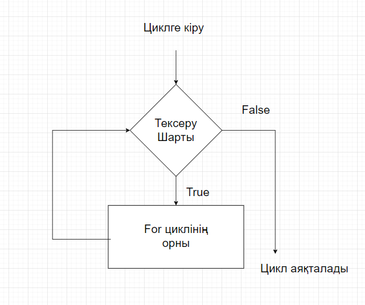

Компьютерлік программалау үшін циклдер кодты кейіп түсіру үшін қолданылады.
Мысалы, егер бізге хабарламаны 100 рет көрсету керек болса, онда біз циклді қолдана аламыз. Бұл тек өмірде жат жасалған мысал; циклдер арқылы жаттығу жасау мүмкіндіктері көп.
Python-да екі түрлі цикл бар:
Python-да for циклі тізімдерді, tuple, жол сияқты элементтер бойынша айналдыру үшін қолданылады. Мысалы,
languages = ['Swift', 'Python', 'Go', 'JavaScript']
# тізімнің көшірмесі бойынша кездесу
for language in languages:
print(language)
Шығармашылық
Swift
Python
Go
JavaScript
Жоғарыдағы мысалда, languages атандырылған тізімді құрдың. Бірінші бетіні language өрісіне Swift мәнімен орналасқан, сондықтан цикл ішіндегі жауапты басу жаттығу жасалады.
language тізімнің келесі элементімен жаңартылады, жаттығу өзгергенімен салыстырылған печать жауапты қайтадан орындайды. Осы жолмен, циклдік іске өзгеру тізімнің соңғы элементіне дейін жаттығу жасайды.
for циклінің синтаксисі:
for val in sequence:
# оператор(лар)
Мұнда, өзара әр бір ітерацияда дайындалады val sequence көшірмесінің көрсетілген элементіне кіру үшін. Циклді қоса кетуде sequence көшірмесінің соңғы элементіне дейін жалғастырылады.

for x in 'Python':
print(x)
Шығармашылық
P
y
t
h
o
n
range - бұл екі сандар арасындағы мәндердің жиынтығы.
Мұнда, мәндер жиынтығын көрсету үшін Python-дың range() емес қолданамыз. Мысалы,
values = range(4)
Мұнда, range() ішіндегі 4 мәні, мәндердің 0, 1, 2, 3 мәндерін көрсетеді.
Python-да біз for цикліні қолдана аламыз, мәндердің жиынтығы бойынша бірінші мысалда, мысалы,
# мәндердің жиынтығын көрсету үшін range() қолдану
values = range(4)
# i = 0-дан i = 3-ге дейін ітерация жасау
for i in values:
print(i)
Шығармашылық
0
1
2
3
Жоғарыдағы мысалда, 0-дан 3-ге дейінді мәндер жиынтығы бойынша for цикліні қолдандық.
i мәні 0 болады және көрсетілген ітерацияда қалған сандыққа жататылады. Бұл процес 3-ге дейін жалғасатын жататылады.
| Ітерация | Шарт | Әрекет |
|---|---|---|
| 1-ші | True |
0 басылады. i 1-ге көтеріледі. |
| 2-ші | True |
1 басылады. i 2-ге көтеріледі. |
| 3-ші | True |
2 басылады. i 3-ге көтеріледі. |
| 4-ші | True |
3 басылады. i 4-ге көтеріледі. |
| 5-ші | False |
Цикл аяқталады |
Ескертпе:
forцикліні range бөлігімен қолдану туралы көбірек ақпарат алу үшін, Python range() жолына көз жасауға болады.
for циклін пайдалануfor циклі ішінде көшірмелерді қолдану міндетті емес. Мысалы,
languages = ['Swift', 'Python', 'Go']
for language in languages:
print('Сәлем')
print('Хай')
Шығармашылық
Сәлем
Хай
Сәлем
Хай
Сәлем
Хай
Мысалда, тізімде үш элемент бар екені себебі, цикл үш рет жұмыс істейді. Әр ітерацияда цикл бөлігі 'Сәлем' мен 'Хай' деп басады. Тізімнің элементтері циклді ішінде пайдаланылмайды.
Егер біз тізімнің элементтерін цикл ішінде қолдану көрсетпесек, циклді бұл түрде жазауға болады:
languages = ['Swift', 'Python', 'Go']
for _ in languages:
print('Сәлем')
print('Хай')
_ символы тізімнің элементтеріні for циклінін тізбегі ішінде қолданылмайтындығын көрсету үшін пайдаланылады.
for циклінің қосымша else блогы бола алады. else блогы осы циклді жаңғалауымыздан кейін орындалады (цикл тізбегінің өзгеріп кеткен соң). Мысалы,
digits = [0, 1, 5]
for i in digits:
print(i)
else:
print("Элементтер қалмады.")
Шығармашылық
0
1
5
Элементтер қалмады.
Мысалда, for циклі digits тізімінің барлық элементтерін басады. Цикл аяқталғаннан кейін, ол else блогын орындайды және Элементтер қалмады. деп басады.
Ескертпе:
forциклі break операторы арқылы тоқтатылмаса,elseблогы орындалмайды.